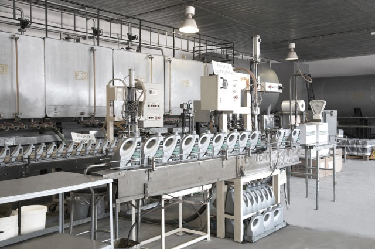

Produkte

„Инса Ойл” предлага богата гама от петролни продукти. Компанията произвежда горива за дизелови двигатели, индустриални горива – газьол за промишлени и комунални цели, тежко гориво и котелни горива.
Горивата, произвеждани от компанията, отговарят на всички национални и международни стандарти за качество. Високото качество на продуктите на „Инса Ойл” е удостоверено със сертификати от „Сертификация” ЕАД към Министерството на икономиката и „Снабдяване и търговия – МО” ЕООД към Министерството на отбраната.